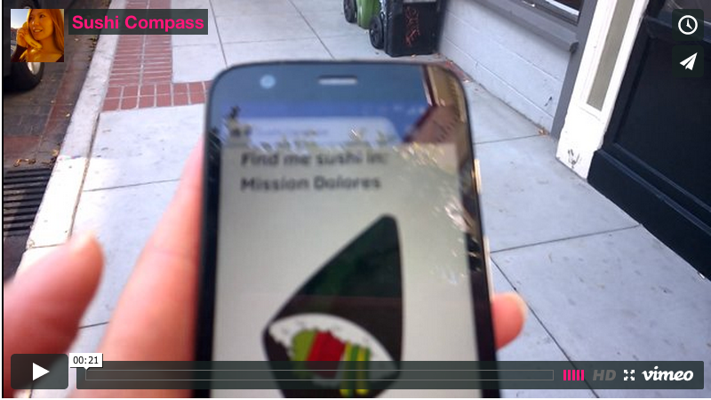
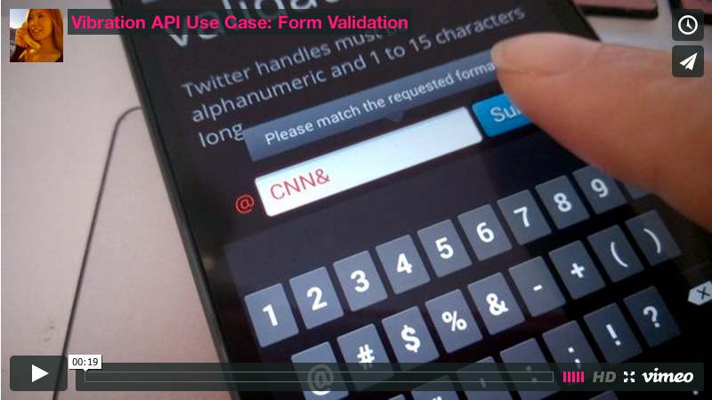

Watch the demo video at: https://vimeo.com/92208773
Demo: http://girliemac.github.com/sushi-compass
Battery Status API
var battery = navigator.battery || navigator.mozBattery;
battery.addEventListener('chargingchange', updateStatus);
battery.addEventListener('levelchange', updateStatus);
function updateStatus() {
alert('Battery status: ' + battery.level * 100 + ' %');
if (battery.charging) {
alert('Battery is charging...');
}
}
14*
16
Battery Status API
http://goo.gl/V1n6h (Pictured: Firefox)
Vibration API
var vibrate = navigator.vibrate || navigator.mozVibrate;
// vibrate for 1sec
vibrate(1000);
// vibrates for 1sec, still for 0.5 seconds,
// and vibrates again for 2sec
vibrate([1000, 500, 2000]);
14*
16
30

Watch the demo video at: https://vimeo.com/86735842